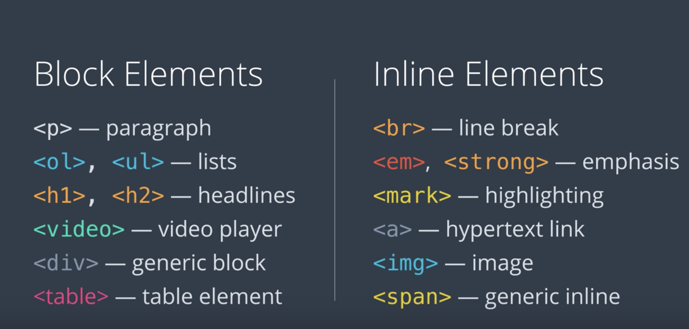
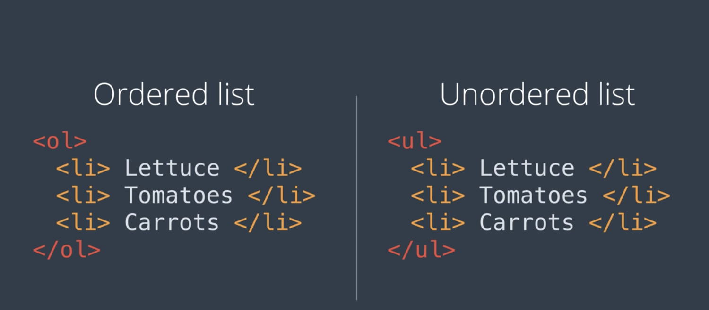

Introduction to programming
HTML
Web pages and servers
Most of the time your browser recieves web pages by communicating with servers over the internet.
Servers are computers that aren't fundamentally different from a normal computer, BUT they have programms running on them
that answer browser requests. The power of the internet is that you can connect to a file or document on different server.
A web page can contain information, videos, images, fonts or program code from the same web server or other web servers.
When you go to a webpage or follow a link your browser makes a request to the server asking for a particular document by
name. The server sends a response back to the browser containing that document. Or if it can't find that document,
it sends an error message instead. The rules for how these responses work are called the Hypertext Transfer Protocol (HTTP)
This is why web addresses start with HTTP or HTTPs (Hypertext Transfer Protocol) - telling the browser how to talk to the server.
The difference between addresses with http: and https: is whether the browser uses
encryption to keep your data private (the S stands for Secure).
When first making a website you won't need this yet, as you can open local html files in your browser. However, later when
publishing a website to the world, this will require uploading the file to a web server.
So what goes into web page?
Html or Hypertext markup language provides the structure and text for web pages. When your browser is opened, the first
thing that a server will send to it is a piece html.
HTML and programming
HTML is a good place to start thinking about programming because it lets you practice ideas that are essential to programming while allowing for quick feedback on what you're learning in a web browser. There are some key concepts in programming:
- Syntax: The grammer rules of a language - how you put the code togehter
- Formalism: "computers are stupid" - computers take code completely literally (like Drax from garudians of the galaxy!)
- Nesting: where information is organized in layers, or where objects contain other similar objects.
There is a lot of information to help in the learning process and documentation is widely available through a quick google search. You can learn a lot about HTML by looking it up on The Mozilla Developer Network
Text editors
HTML and programs are written in text files. Text files contain nothing but characters. No special typeography, photos, icons or other images basically anything you could write on an old fashioned type writer. HTML files are only made up of text and the layout of the web page on the browser shown to a user, is put together based on the code in that text file. A text editor edits plain basic text files. There are various different text editor programs specfically made for creating code. These include Atom (created by Github) and VS code (created by microsoft)
When you load a file into an programmers text editor, you'll often see it displayed with colours and special formating which is called syntax highlighting. This is not diplayed in the file itself but helps to use the correct grammer when editing files. When saving a file it's conventional to use a particular file extension or ending which indicates the file type( i.e .py or .html). This helps editors and browser treat the file correctly.
The job of html
Html documents are the building blocks of the web. The web is basically made up of these documents and they can do a number of things. This is broken down into different parts.
- Text that the user will actually read in the browser
- Markup which tells the browser what text should look like or how it's arranged and within markup there can be...
- References to include other documents and files like images and videos
Markup
Markup is just text that has a special meaning. In html most of the text looks like this:
This is a <strong> awesome </strong> example of html.
It has less than and greater than signs that set off the name of a keyword such as 'strong'. The word
strong inside these symbols is a tag. This whole unit with two matching tags and some text in between is called
an element.
Another example is the 'em' tag: <em> emphasise! </em> which stands for emphasis.
It means the text inside should be emphasised which usually means it's displased in italics.
Breaks and empty elements
Whitespace includes spaces, tabs, and line breaks. When the browser displays an HTML file, it treats a run of whitespace as a single space character.
In order to create a line break that will show up in the browser, use the <br> tag.
There is no closing tag for the br tag because there are no contents inside a line break.
Elements like this are called void or empty elements.
One other example of this is:
<img src="https://website.com/200.png alt="wesbite-logo">
Paragraphs
The Br tag is great for creating line pages in poems for examples. However a lot of text across the internet are articles journals and information that are contained in paragraphs. To make a pragraph in html we use the<P> element which
stands for paragraph. It is a regular tag, and whenver you're wiring regular elements in html the p tag sould be used.
Typographic elements
Typographic elements are used to say that the browser should display text in a different way
example1example2
<mark></mark>Highlights text<sup></sup>Makes text superscript<sub></sub>Makes text subscript
Originally, HTML started out as a tool for scientific and academic work; and these are really useful for science and math, like writing x2+3x+4 = 1 or chemical formulas like H2O.
Nested elements
Nesting is the idea that objects can lie within others. Similarly to a russian doll set. Elements on a html page can go
inside other elements however, they must follow certain rules.
The top level elements in a html document are things like; paragraphs, headings and big divions. Inside the top level elements
smaller elements such as bold, italicising, ordered/unordered lists etc. Any of the smaller elements can be put inside
another too. For instance you can have text that is both emphasised and highlighted.
This comes with some exceptions i.e a paragrpah can't be nested inside a paragrpah and elements cannot overlap.
Headings
HTML has several elements for headlines or section headings, starting with <h1>
for the largest headlines and going down to <h6>for the smallest.
Like with the p element, heading elements create a little bit of space (margin) around themselves.
Block and inline
There are two different ways in html to break text into multiple lines. the <br> and <p> element. So what's the difference?
The <br> tag is just to break the line. The paragraph tag not only contains the text, but also creates a invisible box around the text
which is called a block.
This tells the browser to create a box around the text, blocks are heaviy involved in how the browser lays out text on the screen and It have both
height and width.
Elements that don't create this block are called inline elements. Below are some examples of both:

For reference, there is a full list of all the block and inline elements in html:
The div element
The <div> is short for division, because that's what this element is for—you can use it to divide up the page
into different sections. Like the paragraph <p> element, the division div element has an invisible box around it—and just like <p>
it can have a border, a margin, a width, a height, and so on. But a <p> element is specifically meant to contain text.
In contrast the <div> element is a generic container for whatever other elements you might want to put inside and you can use it
to organise the content, dividing the page into sections.
Lists and implied close tags
There are a few HTML elements that are always used inside certain other elements, they don't make sense on their own.
For example the list or <li> element is one item on a list (e.g table of contents). A list item
can not display on its own. There are two types of lists, ordered and unordered.
Ordered lists are usually displayed with numbers or letters, whilst unordered diplay bullet points.

So why can't list items be displayed outside of a list?
An <ol> and a <ul> list are displayed differently. Without the context, the browser
wouldn't know whether to display a bulleted list or numbered. However lists can be listed inside another list.
Because an <li> element can only occur inside a list, html doesn't actually require a closing tag. However the
<ol> and <ul> must have closing tags.
Web addresses
The web wouldn't be the web without web addresses, every page, image and link has one. This is how your browser links from one page to another. They're also a big part of how users tell their browser to go to a website in the first place. Whenever you put an image or link in your html, you'll do this using addresses. In the web standards there are technical terms for these addresses. A web address is called a Uniform Resource Locator, also known as a URL.
- Uniform= standardised
- Resource= a file or other data object
- Locator= address for finding something
This just means that it is an address that tells your browser how to locate a particular resource, a file for instance, in a standardised way.
Meaning that it is consistent. URLs usually have http or https in front of www. This is not always the case, the browser will still guess
you want to go a website. However in a html file more informaiton is needed - this is where fully qualified/absolute urls come in.
<a href="https://website.com">
HTTP/HTTPS tells the browser whether to use a secure encrypted connection to the webserver.
The URL of a file on your local system will start with file instead. All three options are all protocols(ways that the browser can get something.)
'://' - seperates the protocol from the domain name. In file documents there will be no domain name as it is not hosted on a web server.
After this is the file path - the name of the directory and the file.
When you're linking to the top page (or home page) of a site, the URL does not need a file path after the domain name—so you will just see a single slash at the end of the address:
http://en.wikipedia.org/
And often this slash will be omitted altogether:
http://en.wikipedia.org
This would still be considered a fully-qualified URL.
In contrast, if we look at the URL for a file on your local system, we must give the file path—in fact, most of the URL is the file path:
file:///Users/Kelly/notes.html
If we took away the file path from the above, we would just have:
file://
Which is definitely not a fully qualified URL.
Links and the <a> tag
The web is built on of hypertext which means that you have textual documents BUT, they also reference other docunents. On the web page
these are called links. The element for making a link is an anchor - an <a> element which anchors the link on the page.
The opening tag for the <a> element has an extra piece of code - href, like below:
<a href="https://example.net">The example page</a>
This is an example of a html attribute and it gives the html element extra meaning. The name href stands for
Hypertext Reference. It is used with the <a> tag and a few other
tags that link to a document. Attributes like href only go in the opening tag at the beginning of an element. The contents
of the element becomes the name a user clicks on to access the link, followed by a closing a tag.
The <a> element is an inline element. It doesn't create a box on the page. Links
normally have the appearance of a specially highlighted piece of text.
Adding images
Images are a large part of why the web is so successful. To incude images there is a html element to do this. which is
the <img> tag, short for image. It works much like the anchor tag for links but with some important differences.
The anchor tag uses a single href attribute and the value for this attribute is the URL of the page we would link to.
But the img elemnent uses two attributes. This is the src and alt attributes.
srcstands for "source" and it's the url of the image you want to appear on your webpage.altstands for alternate and it's the text description of that image.
Both of these attributes must be included as the source tells the browser the source of the image, and the alternate
tells the browser what text to show if it can't display the image. For example alt text will be used if the image is missing
from the server or if the users connection stops working before the image can be loaded, or for the visually impaired.
The img element does not copy the image file into the html file, it only tells the browser where to find the image file.
The image file still has to be some where (either the local computer or a web server).
The img element is a void element like br. There are no textual content or close tag for it.
Many websites have images that are also links: the browser displays an image, but then the user can click on that image to go to a different page.
The best way to do this would be to put an image element inside an anchor element like so:
<a href="https://google.com"><img src="glogo.png" alt="google logo"></a>
Files and relative URLs
So far when adding images to html we have referenced urls from the internet and different servers. But what if the image is on your local server?
You can put the file name in the image tag, as the browser looks at the src and when a full URL isn't seen (no ://) the browser has a rule
for what to do in this instance. The browser will look for the file name as a variation of the HTML document's own
URL. This is calle a relative URL, the browser will look for the img file in the same directory as your html doc.
This allows for a lot less typing and relative URLs are the reson why links only work by inputing https:// first. Because
in HTML a URL with no :// in it is always treated as a relative url.
Websites like placebear.com and placekitten.com are designed to make this super easy.
All you have to do to get an image of any given size is put the width and height of the image at the end of the URL,
as in https://placebear.com/200/300.
In summary The URL of an image may be an absolute URL, such as http://placebear.com/800/600, or it may be a relative URL such as images/wolves.jpg.
The !DOCTYPE tag
So far we have covered html fragments - snippets of the markup and syntax. A browser can display this but there a some things
to add to make them into a full html document i.e. a webpage.
How does the browser know what type of file it is? The file extension only tells part of that story. There have been various
different versions of html. We indicate what type of html we're using through a DOCTYPE tag, which is put at the very top of the document.
It looks like this:
<!DOCTYPE html>
This tag tells the browser that we're intending for this document to be treated as modern html as opposed to
those older version. This prevents a lot of problems when your html becomes more complex. Without this tag, browsers will go into what's called
"quirks" mode. Which is trying to be more compatible with older forms of HTML.
Documents: Head and Body
A full html documents actually has two parts a head and body. Every element so far
lives in the <body> tag. This is where the content goes. The <head> is where we put certain pieces of
important information about the document. Both the <head> and the <body> occur in a single
enclosed element called the <html> tag.
Here are a few things that can occur in the head of the document:
- The title - It tells the browser what title to put on a tab that's displaying the document. This is required
- The style sheet information - Tell the browser things like what fonts, colors and design elements.
- Scripts - programs that are run in the browser. This is how front-end web apps work
- Metadata - Other information about the page itself such as keywords for search engines (SEO)
There is also information that can go on the html tag itslef. E.g. noting what human language your document is written in:
<html lang="en">
This is useful for programmes that try to understand or pronounce the contents of the documents such as screen readers
for visual impared readers.
The grammar of HTML does not require that you literally write a <head> or <body> tag in your HTML code.
Many web developers do write these. However, if you don't, the browser will attempt to place them into your code itself.
It needs to put the head element around certain elements that belong there, such as title; and to put the body
element around the elements that form the document's body. This means that all the head elements must appear first,
and the body elements after.
You can't have a head element, such as title, in the middle of your document.
Validating HTML
Once you've written your document, how can you be sure that your file is spelled correctly and written grammatically. First you can load this in your browser however, whilst it may look fine in the browser it may have a mistake that your browser can deal with but other browsers can't. Fortunately there is way to check you file to make sure the html syntax is correct. There are tools called html validators that will check for all the details. Everything from tags being spelled correctly, to some of the tricky nesting rules. The best known validatory is https://validator.w3.org/. run by the World Wide Web Consortium (W3C). This is the organisation that writes the standards for html and other componenets of the web. There are 3 ways to use the validator service:
- If you're web pade is on a public web server, you can give the URl and it will download and check the html
- Upload the file
- Copy from the editor and paste it in.
The output will be a report detailing the errors in the html file if there are any.
Styling with CSS
Starting with style
CSS or cascading style sheets is how web pages get all the colour, decoration and fonts. Using CSS you can improve the look of html pages.
Developer tools
Something special built right into the web browser is called the 'developer tools' and it's something that every web developer spends a lot of time with. Every browser has this built in. If you right click anywhere on a page and select inspect this allows you to look at the HTML elements for everythin on this page. There are several different tabs:
- Elements
- Console
- Sources
- Network
- Performance
- Styles
- Even listeners
- DOM Breakpoints
- Properties
- Acessibility
Each of these tabs will let you look at a different aspect of what the browser is doing. For the meantime, the elements tab shows the HTML elements that make up the webpage. This looks a lot like the html source code. This elements view and the rendered web page are two different views of the same underlying data. The Elements tab isn't showing you the original HTML source code. It's showing you a sort of map or representation of how the browser sees the page. For instance, in Chrome, many pieces of text will show up in "double quotes", which aren't in the original source or in the rendered version of the page.
How to access Developer Tools in your browser
- Open the Chrome menu at the top right of the browser window (the three vertical dots), s elect and select Tools > Developer Tools, OR
- Right-click on any page element and select Inspect.
- Safari
- From the menu bar, select Safari > Preferences, and click Advanced.
- At the bottom of the box, check the "Show Develop menu in menu bar" checkbox.
- Choose Develop > Show Web Inspector.
- Mozilla Firefox
- From the menu bar, select Tools > Web Developer > Browser Console, OR
- Press Ctrl+Shift+J (Cmd+Shift+J on Mac).
Text to trees
There are things in html source code that don't show up on the screen i.e. the literal text in the tags that make up a html element. There are also things that show up on the screen/browser that don't appear in the html file, Such as the numbers in an ordered list. Between the html file and the browser, there is an intermediate step. The intermediate is a Data structure - it is an organised map of what's going to end up on the page. It's also what developer tools lets us look at. Wnen the browser reads the HTML source